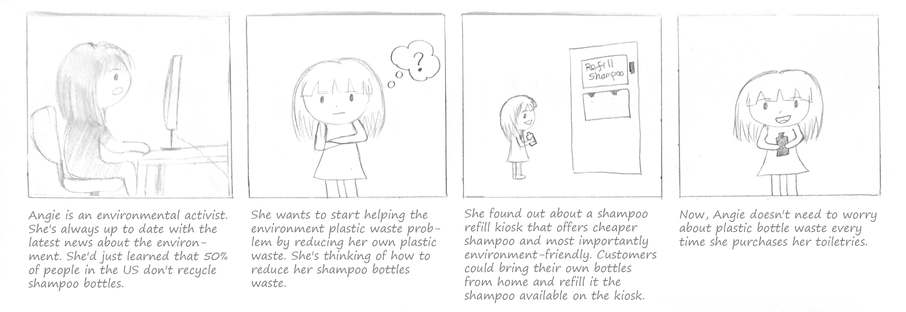
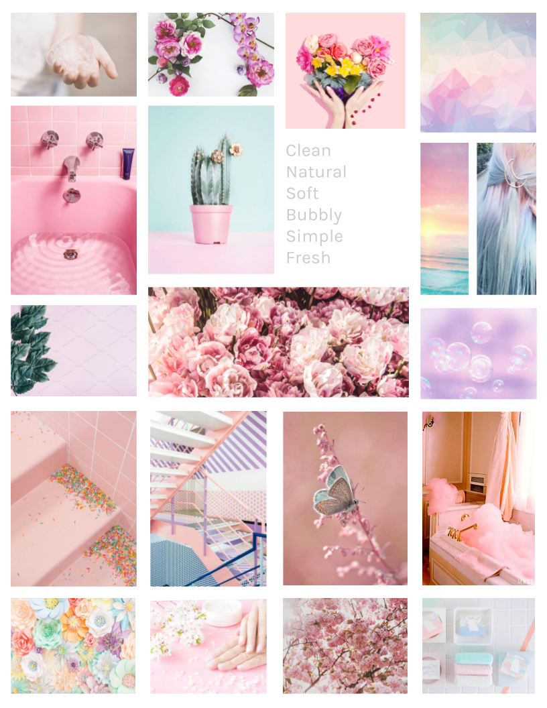

Shampour
"Eco-friendly shampoo refill kiosk"
Goal: Design an interactive kiosk that leverages physical interaction with users and objects to create an experience that is intuitive, consistent, and reliable.
Date: April 2019 - June 2019
Duration: 3 months
Skills: Product Design, UX Design, Prototyping, Interaction Design, Wireframing
Tools: Adobe XD, Adobe Illustrator
Role: Product & UX Designer
Project Summary
The goal of this project is to design an interactive kiosk that leverages physical interaction with users and objects to create an experience that is intuitive, consistent, and reliable, as well as thoughtful and delightful in its implementation. The focus is to choose a context where people currently need to wait in line to see a human service provider, or where physical interaction with objects and/or users can enable whole new kinds of user experiences. My team decided to delve into the context of retail setting. To be more specific, a shampoo refill kiosk which would help solve the plastic pollution problem we're facing.
Online Research
First, we did online research to support and make a stronger case for our kiosk goal. We also explore any existing refill kiosks to examine the current limitations and frustrations that customers encounter.
- More than 552 million shampoo bottles could be ending up in landfills every year. This could fill 1,164 football fields.
- 50% of people in the US don’t recycle shampoo bottles.
- Shampoo bottles is one of the plastic waste high density polyethylene type (HDPE) which is non-biodegradable and can take centuries to decompose.
- Companies are making shampoo bottles from ocean waste.
- There is a couple of existing refill kiosk such as the one called EcoPod. However, they only sell their own brand product.
Observational Findings
We also did some observation at a couple of grocery stores like Vons and Ralphs to know more about people shampoo buying habits.
- Some people bought products for their family or significant other. We saw that some people were on their phone to talk with the person they're buying the shampoo for.
- People tend to spend about a few minutes (around ~5-ish minutes) while choosing toiletries, even if they already have an idea of which one they want to buy.
- Some people walked back and forth along the aisle to get a scope of the choices they have to compare.
- Some people have a certain brand they’re looking for, some browse across brands and scents.
Interviews
Next, we came back to the grocery stores a week after the observation and find people who's shopping for shampoo to do a short interview.
- Most people consider price when choosing a product.
- Most people tended to recycle their bottles. However, the people we interviewed may represent a small population, as our online research suggests that such a habit it not as common as it would seems to be.
- Open to try new brands or scents but mostly have their preferred brands.
- Most people purchased toiletries for themselves.
Personas


Storyboards
Sketches
After gaining information about the challenge that we want to tackle and getting to know more about our potential customers and their struggles, we made a quick sketch of our future kiosk and some of the screens.

Wireframes
Moodboard
Style Guide
Keeping the theme that we created on our moodboard, we used pastel pink, blue, and purple. We also chose the typeface Karla to keep the entire theme simplistic and readable. On the top is our logo which I made using Adobe Illustrator. The font used on our logo is also Karla with a soft pink shampoo droplet on the right side.
User Testings
In general, users found the Shampour kiosk to be pretty straightforward and easy to use. However, there were some issues with refinement and extra steps that could be added to make for a smoother experience. Below are the feedbacks and problems that we have found during testing.
- Some users were confused as to when they should put a bottle under the dispenser, and for that, we added a pop-up that tells users when to put their bottles before they start filling for shampoo.
- Users wanted to have set volumes commonly used for an easier experience.
User Testing 1:
- Suggestion to add grating or something simulating it to show that if there were to have any spillage, that wouldn’t be an issue.
- Some of them suggested that we add a scent option for our filters, however, for the sake of time and simplicity, we opted to remove the scent option.
- Some people don’t realize when the filling process is done -> So we add a confirmation message to tell them that the process is done and they could proceed to checkout.
- A couple of people that chose the nozzle method to fill in seems to find the “Fill in your bottle with the nozzle on the right” pop up confusing. We expect them to click the continue button on the pop-up but some of them take the nozzle and just wait without clicking the continue button. -> So we change the wording to “Pick up the nozzle on the right” and removed the continue button and use a timer instead so that the pop-up will disappear after 3 seconds. Then the customer could start filling their bottle.
- Some people wish there's a search bar for people that wanted to look for a specific product quickly, which we then added for the ease of finding a specific product.
- Some people wish for a price filter for ease of price comparison; the filter was then added on a later iteration.
User Testing 2:
Takeaways
We are so proud of our final implementation of this project. Through this project, I have learned that great design starts with thorough user research. Through user research and effort in trying to truly understand our target users/customers, we are able to find the market gap that could differentiate our product from the other existing products on the market. We might feel like we know what users need but our approach to solving the real user problem could only be discovered through user research. Another thing that I've learned while working on this project was the importance of conducting usability testing in between each step. At least, one user testing on the paper/lo-fi prototype and another one on the hi-fi prototype just before releasing the product. The goal is to check and recheck if we missed anything important and if the design is intuitive for our users.
Prototype